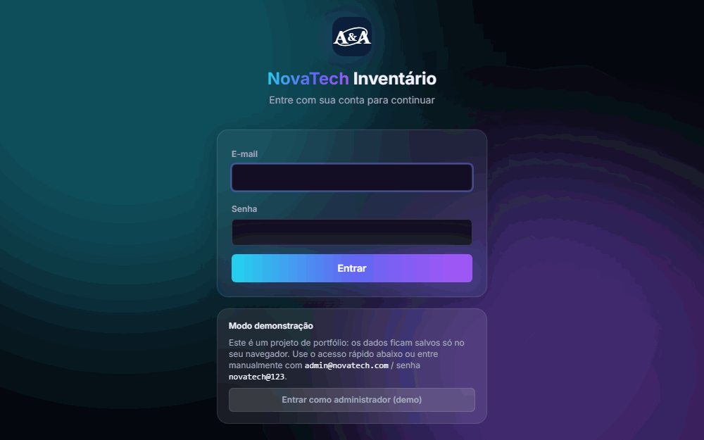
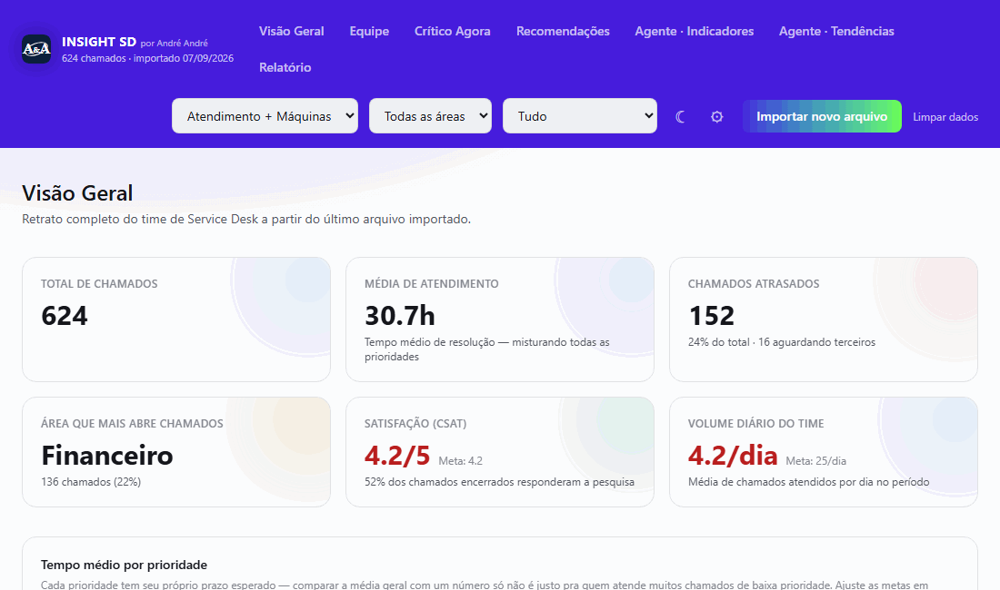
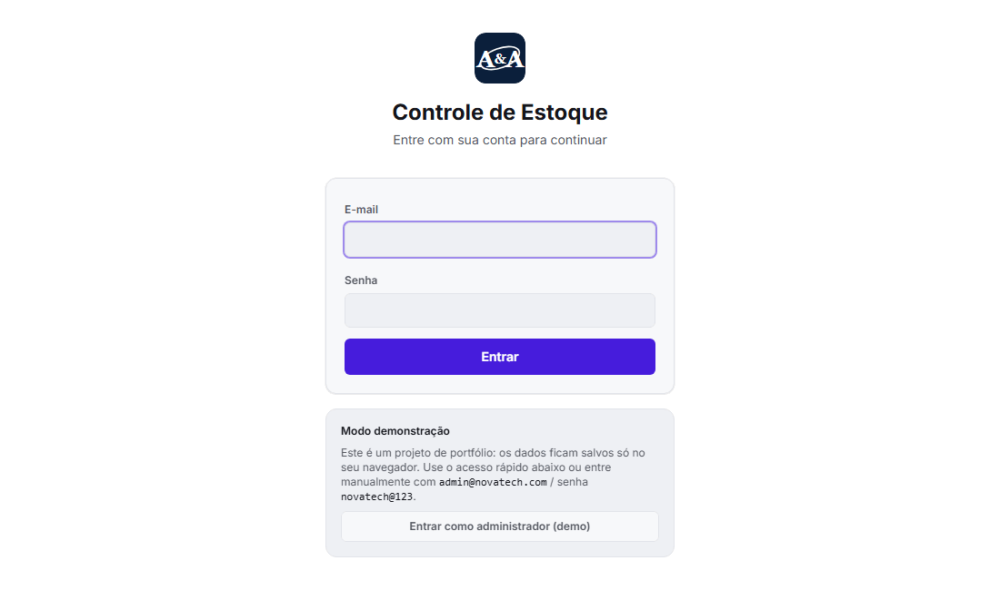

Portfólio de projetos NovaTech
Uma coleção de sistemas completos, construídos do zero e publicados aqui como demonstração prática de engenharia de software. Todos os dados são fictícios e rodam 100% no seu navegador — sem servidor, sem cadastro real.

Inventário de Máquinas
Controle completo de parque de máquinas (novas e antigas): cadastro, ciclo de vida, venda, importação e exportação de planilha, usuários com papéis de acesso e trilha de auditoria de remoções.
Abrir demonstração →

Insight SD
Dashboard de análise de Service Desk estilo Power BI: SLA, ranking de agentes, backlog, satisfação e recomendações automáticas geradas por regras — sem IA, tudo calculado no navegador.
Abrir demonstração →

Controle de Estoque
Controle de estoque de equipamentos multi-sede: movimentações em lote por chamado, cancelamento auditável, alerta de estoque mínimo e visão geral com gráficos filtráveis por sede e período.
Abrir demonstração →
Próximo projeto
Novos mini projetos serão adicionados aqui ao longo do tempo.
André André
Analista de Suporte Pleno · Matera
Engenheiro de Computação com mais de 11 anos de experiência em TI, atuando em ambientes corporativos críticos com forte atuação também em Business Intelligence. Especialista em suporte técnico avançado, infraestrutura (Windows/Linux, Active Directory) e gestão de incidentes — nos últimos anos ampliei a atuação para dados e BI, construindo dashboards, KPIs e pipelines ETL com SQL, Power BI e Looker Studio. Hoje busco unir essa bagagem técnica com a paixão por transformar dados em insights estratégicos para o negócio.
Formação: Engenharia de Computação — Wyden Educacional